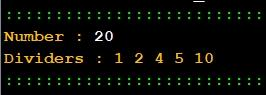

Exercício
Dificuldade
Pontos
Data limite
Créditos
Ficha05_026
Normal
4.0
16/09/2022 12:00:00
(c)M@nso 2021
Divisors of a number
Build an algorithm that writes to the console the divisors of a number entered by the user.

Input
Output
84
Number : 84 Dividers : 1 2 3 4 6 7 12 14 21 28 42
6
Number : 6 Dividers : 1 2 3
66
Number : 66 Dividers : 1 2 3 6 11 22 33
21
Number : 21 Dividers : 1 3 7
82
Number : 82 Dividers : 1 2 41
71
Number : 71 Dividers : 1
16
Number : 16 Dividers : 1 2 4 8
46
Number : 46 Dividers : 1 2 23
83
Number : 83 Dividers : 1
87
Number : 87 Dividers : 1 3 29
Algorithmi 22.05 Student version (c) Antonio M@nso 2022 Instituto Politécnico de Tomar - All rights reserved